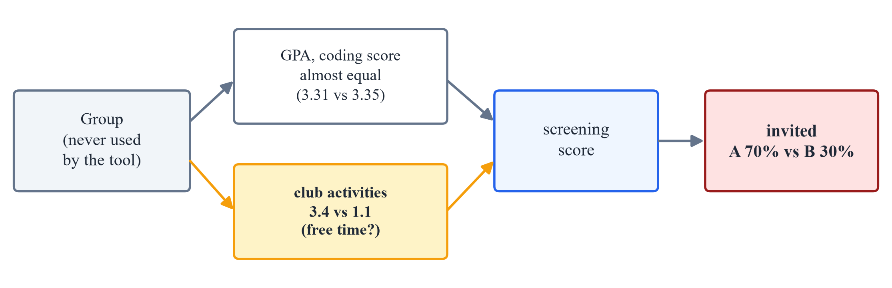
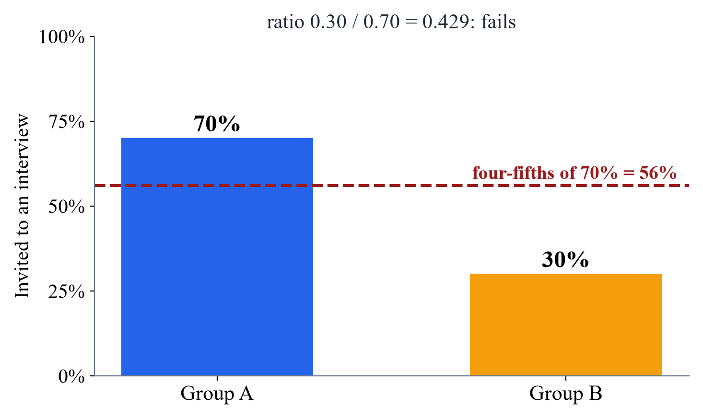
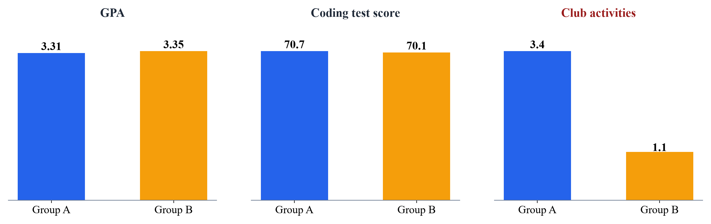
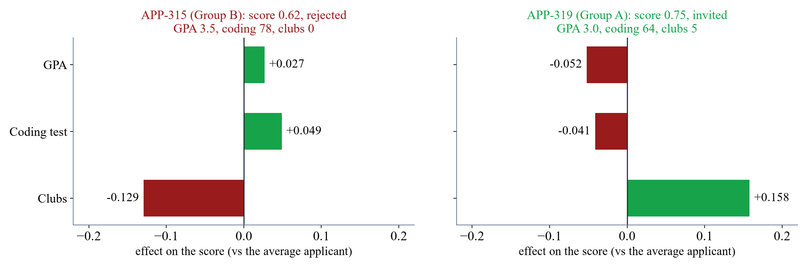
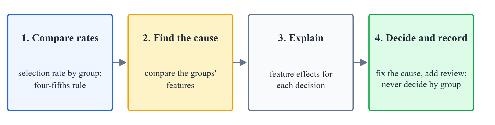

Today: the result first, then the audit
| Group A | Group B | |
|---|---|---|
| Invited | 70% | 30% |
| GPA (average) | 3.31 | 3.35 |
| Coding test (average) | 70.7 | 70.1 |
| Club activities (average) | 3.4 | 1.1 |
Ratio 0.429: fails the four-fifths rule. Same skills; the gap comes from club activities.

| Idea | Meaning |
|---|---|
| Disparate treatment | deciding by group, e.g. a different threshold per group: forbidden |
| Disparate impact | one rule for all, but one group is selected far less often: investigate |
| Four-fifths rule | a group's rate below 80% of the highest rate needs review |
| Feature effect | coefficient x (value - average): what pushed the score down |
session_04_04_dataset.csv: 20 internship applicants, 10 per groupGroup: Group_A or Group_B, a protected characteristic, used only for the auditGPA, Coding_Test_Score (0-100), Club_Activities_Count (0-5)Screening_Score: the tool's score; invited at 0.70 or more# 1. Input: 20 internship applicants and their AI screening scores import pandas as pd df = pd.read_csv("data/session_04_04_dataset.csv", index_col="Applicant_ID") # 2. Process: invited at 0.70, the invite rate of each group, and the ratio df["Invited"] = (df["Screening_Score"] >= 0.70).astype(int) rates = df.groupby("Group")["Invited"].mean() ratio = rates.min() / rates.max() # 3. Output: rates, the ratio, and the four-fifths test print(rates) print(f"Ratio of the invite rates: {ratio:.3f}") print("Passes the four-fifths rule:", ratio >= 0.80)
0.80Quick Check: pd.crosstab(): A 7 invited, B 3 invited

# 1. Input: the 20 applicants import pandas as pd df = pd.read_csv("data/session_04_04_dataset.csv", index_col="Applicant_ID") features = ["GPA", "Coding_Test_Score", "Club_Activities_Count"] # 2. Process: the average of each feature and of the score, by group profile = df.groupby("Group")[features + ["Screening_Score"]].mean().round(2) # 3. Output: the two groups side by side print(profile.T)
.T flips the table: measures become rowsQuick Check: clubs: Group A 1-5, Group B 0-3

# 1. Input: the 20 applicants and the three features import pandas as pd from sklearn.linear_model import LinearRegression df = pd.read_csv("data/session_04_04_dataset.csv", index_col="Applicant_ID") features = ["GPA", "Coding_Test_Score", "Club_Activities_Count"] # 2. Process: copy the hidden score, then the effect of each feature copy = LinearRegression().fit(df[features], df["Screening_Score"]) effects = ((df[features] - df[features].mean()) * copy.coef_).round(3) effects.columns = ["GPA", "Test", "Clubs"] effects["Main_Reason"] = effects.idxmin(axis=1) rejected = df["Screening_Score"] < 0.70 # 3. Output: how well the copy fits, then the reasons for each rejection fit = copy.score(df[features], df["Screening_Score"]) print("R-squared of the copy:", round(fit, 3)) print(effects[rejected].join(df["Group"]))
idxmin gives the main reasonQuick Check: Group B: clubs is the main reason 5 times

APP-315 has the better GPA and coding score but no clubs: rejected. APP-319 has weaker skills but 5 clubs: invited.| Rejected in | GPA | Coding test | Club activities |
|---|---|---|---|
| Group A (3) | 1 | 2 | 0 |
| Group B (7) | 0 | 2 | 5 |
0.987), so these reasons can be trusted. Common mistake: explaining a model you have not checked.| Possible fix | Allowed? |
|---|---|
| A lower threshold for Group B | no: deciding by group |
| One lower threshold for everyone | only with care (Exercise 3) |
| Review whether club activities belong in the score | yes: fixes the cause |
| A person reviews applicants just below 0.70 | yes: human oversight |
| Document every test and decision | yes: accountability |

Goal: a report with counts, rates, the ratio, and an alert
Script: YourName_S44_audit.py
.map() turns True/False into Invited/Rejected0.429; the ALERT line printsGoal: a function for any threshold, and a one-row record for management
Script: YourName_S44_record.py
screening_audit(df, threshold) returns rates, ratioprint(ratio) outside the function: NameError; ask the AI Chat whydata/governance_record.csvRatio 0.429, Status Review before useGoal: test thresholds 0.50 to 0.80 for fairness and for the coding skill bar (60)
Script: YourName_S44_threshold.py
0.50 passes, with 3 below the skill bar: the threshold cannot fix it